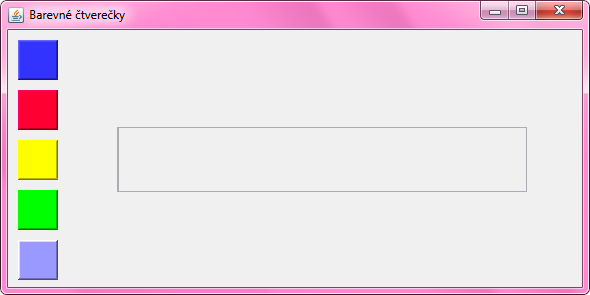
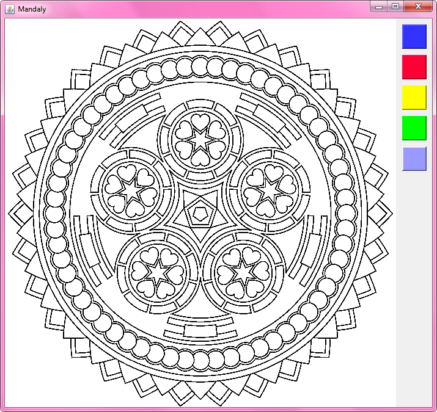

Lekce 05
Nejprve jsme se naučili novou událost -
mousePressed a mouseClicked z MouseListener.
Potom jsme si naprogramovali program "5 barevných čtverečků". Když se na některý barevný čtvereček klikne, obarví se středový JTextField na zvolenou barvu. Různě jsme s tím pokusovali a zkoušeli i vypsat složky RGB dané barvy.
Metody
Vzhledem k tomu, že všech 5 barevných čtverečků má podobné chování,
je poměrně pracné psát reakci na kliknutí na každý čtvereček samostatně.
Ale přesně od toho tu jsou metody!
Metody nám umožní extrahovat opakující se příkazy
na jedno místo a pak je prostě odevšad zavolat.
Takhle by vypadalo pětinásobné opakování příkazů:
private void priStiskuBarvy1(MouseEvent e) {
barva = btnBarva1.getBackground();
txtRGB.setBackground(barva);
Integer cervena = barva.getRed();
Integer zelena = barva.getGreen();
Integer modra = barva.getBlue();
String text = "Slozky barvy: " + cervena.toString() + ", "
+ zelena.toString() + ", " + modra.toString();
txtRGB.setText(text);
}
private void priStiskuBarvy2(MouseEvent e) {
barva = btnBarva2.getBackground();
txtRGB.setBackground(barva);
Integer cervena = barva.getRed();
Integer zelena = barva.getGreen();
Integer modra = barva.getBlue();
String text = "Slozky barvy: " + cervena.toString() + ", "
+ zelena.toString() + ", " + modra.toString();
txtRGB.setText(text);
}
private void priStiskuBarvy3(MouseEvent e) {
barva = btnBarva3.getBackground();
txtRGB.setBackground(barva);
Integer cervena = barva.getRed();
Integer zelena = barva.getGreen();
Integer modra = barva.getBlue();
String text = "Slozky barvy: " + cervena.toString() + ", "
+ zelena.toString() + ", " + modra.toString();
txtRGB.setText(text);
}
private void priStiskuBarvy4(MouseEvent e) {
barva = btnBarva4.getBackground();
txtRGB.setBackground(barva);
Integer cervena = barva.getRed();
Integer zelena = barva.getGreen();
Integer modra = barva.getBlue();
String text = "Slozky barvy: " + cervena.toString() + ", "
+ zelena.toString() + ", " + modra.toString();
txtRGB.setText(text);
}
private void priStiskuBarvy5(MouseEvent e) {
barva = btnBarva5.getBackground();
txtRGB.setBackground(barva);
Integer cervena = barva.getRed();
Integer zelena = barva.getGreen();
Integer modra = barva.getBlue();
String text = "Slozky barvy: " + cervena.toString() + ", "
+ zelena.toString() + ", " + modra.toString();
txtRGB.setText(text);
}
Ale lze to zjednodušit takto:
private void priStiskuBarvy1(MouseEvent e) {
zobrazSlozkyBarvy(btnBarva1);
}
private void priStiskuBarvy2(MouseEvent e) {
zobrazSlozkyBarvy(btnBarva2);
}
private void priStiskuBarvy3(MouseEvent e) {
zobrazSlozkyBarvy(btnBarva3);
}
private void priStiskuBarvy4(MouseEvent e) {
zobrazSlozkyBarvy(btnBarva4);
}
private void priStiskuBarvy5(MouseEvent e) {
zobrazSlozkyBarvy(btnBarva5);
}
private void zobrazSlozkyBarvy(JLabel tlacitko) {
barva = tlacitko.getBackground();
txtRGB.setBackground(barva);
Integer cervena = barva.getRed();
Integer zelena = barva.getGreen();
Integer modra = barva.getBlue();
String text = "Slozky barvy: " + cervena.toString() + ", "
+ zelena.toString() + ", " + modra.toString();
txtRGB.setText(text);
}
Nakonec jsem předvedl, jak daný program jen mírně modifikovat, abychom dostali program na vymalovávání mandal.
Mandaly jsem ukazoval ve spěchu, proto je dokončíme přístě.
Pozn: Vyplnění obrázku mandaly je poněkud složitější problém,
který ale v Javě není předprogramován.
Proto jsem dodal následující metody,
které je možné vložit do vašeho programu a metodu vyplnObrazekVLabelu( )
zavolat s předáním vhodných hodnot.
public void vyplnObrazekVLabelu(Integer x, Integer y, Color barvaVyplne, JLabel label) {
if (barvaVyplne == null) {
barvaVyplne = new Color(255, 255, 0);
}
BufferedImage obrazek;
ImageIcon icon = (ImageIcon) label.getIcon();
Image puvodniImage = icon.getImage();
if (puvodniImage instanceof BufferedImage) {
obrazek = (BufferedImage) puvodniImage;
} else if (puvodniImage instanceof ToolkitImage) {
obrazek = ((ToolkitImage) puvodniImage).getBufferedImage();
} else {
obrazek = new BufferedImage(puvodniImage.getWidth(null),
puvodniImage.getHeight(null),
BufferedImage.TYPE_3BYTE_BGR);
obrazek.getGraphics().drawImage(puvodniImage, 0, 0, null);
}
if (x < 0 || x >= obrazek.getWidth() || y < 0 || y >= obrazek.getHeight()) {
return;
}
WritableRaster pixely = obrazek.getRaster();
int[] novyPixel = new int[] {barvaVyplne.getRed(), barvaVyplne.getGreen(),
barvaVyplne.getBlue(), barvaVyplne.getAlpha()};
int[] staryPixel = new int[] {255, 255, 255, 255};
staryPixel = pixely.getPixel(x, y, staryPixel);
// Pokud uz je pocatecni pixel obarven na cilovou barvu, nic nemen
if (isEqualRgb(novyPixel, staryPixel)) {
return;
}
// Zamez prebarveni cerne cary
int[] cernyPixel = new int[] {0, 0, 0, staryPixel[3]};
if (isEqualRgb(cernyPixel, staryPixel)) {
return;
}
floodLoop(pixely, x, y, novyPixel, staryPixel);
ImageIcon obrazekJakoIkonka = new ImageIcon(obrazek);
label.setIcon(obrazekJakoIkonka);
}
// Recursively fills surrounding pixels of the old color
private void floodLoop(WritableRaster raster, int x, int y, int[] newColor, int[] originalColor) {
Rectangle bounds = raster.getBounds();
int[] currentColor = new int[] {255, 255, 255, 255};
Deque<Point> stack = new ArrayDeque<>();
stack.push(new Point(x, y));
while (stack.size() > 0) {
Point point = stack.pop();
x = point.x;
y = point.y;
// finds the left side, filling along the way
int fillL = x;
do {
raster.setPixel(fillL, y, newColor);
fillL--;
} while (fillL >= 0 && isEqualRgb(
raster.getPixel(fillL, y, currentColor), originalColor));
fillL++;
// find the right right side, filling along the way
int fillR = x;
do {
raster.setPixel(fillR, y, newColor);
fillR++;
}
while (fillR < bounds.width - 1 && isEqualRgb(
raster.getPixel(fillR, y, currentColor), originalColor));
fillR--;
// checks if applicable up or down
for (int i = fillL; i <= fillR; i++) {
if (y > 0 && isEqualRgb(raster.getPixel(i, y - 1, currentColor), originalColor)) {
stack.add(new Point(i, y - 1));
}
if (y < bounds.height - 1 && isEqualRgb(
raster.getPixel(i, y + 1, currentColor), originalColor)) {
stack.add(new Point(i, y + 1));
}
}
}
}
// Returns true if RGB arrays are equivalent, false otherwise
private boolean isEqualRgb(int[] color1, int[] color2) {
// Could use Arrays.equals(int[], int[]), but this is probably a little faster...
return color1[0] == color2[0] && color1[1] == color2[1]
&& color1[2] == color2[2] && color1[3] == color2[3];
}
Materiály z lekce
Materiály jsou ke stažení zde: lekce05.7z
Archív si stáhněte, například na plochu. Celý jej rozbalte přímo do C:\
Archív totiž už obsahuje složku
Java-Training a materiály se tím pádem vloží na to správné místo do
C:\Java-Training\Projects\Lekce05.